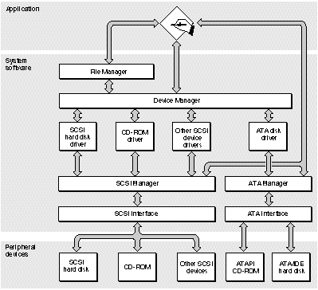

|
PATH |
Support for ATA devices is incorporated in the Macintosh ROM software (firmware). System software for controlling ATA devices is provided by the ATA disk driver, which is loaded into RAM from the drives media by the ATA Manager. The relationship of the ATA disk driver and the ATA Manager is shown in Figure 1-1.
Figure 1-1 Relationship of the ATA Manager to the Macintosh system architecture
ATA disk drives and CD-ROM drives appear on the desktop the same way SCSI disk drives currently do. Except for applications that perform low-level services, such as formatting and partitioning utilities, applications interact with the ATA disk drives in a device-independent manner through the File Manager.
Support for ATAPI and ATA/PCMCIA data transport services is provided through the ATA manager. Access to PCMCIA tuples is not supported by the ATA Manager. Any client that wants to get PCMCIA tuple information must do so through the PCMCIA Card Services.